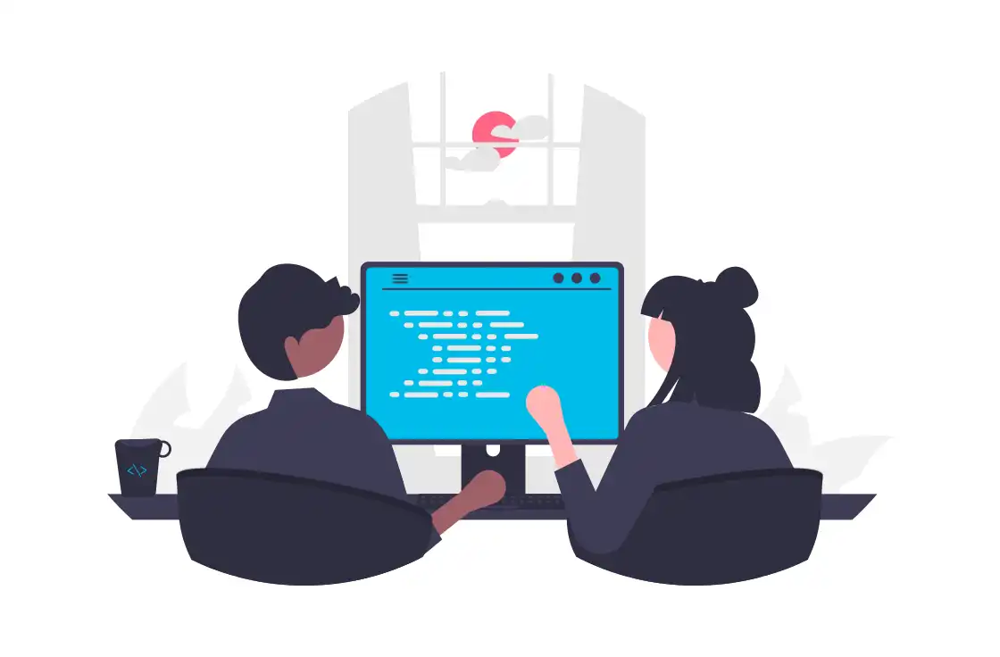

Academia de Redes CISCO
Hoy en día el programa Networking Academy se ha extendido a más de 190 países, cuenta con más de 17.5 millones de estudiantes desde 1997, inscritos en más de 10,000 academias en escuelas secundarias, escuelas técnicas, preparatorias, universidades y organizaciones comunitarias. Cisco Networking Academy es el programa de desarrollo de destrezas de TI y formación profesional que conecta a millones de estudiantes, educadores y profesionales en todo el mundo.
La Facultad de Matemáticas de la Universidad Autónoma de Yucatán es Academia de Redes Cisco desde julio del 2008. La alianza con Cisco nos ha brindado la oportunidad de ofrecer recursos para la formación tecnológica de instructores y alumnos de la comunidad de la Cisco Networking Academy y con ello consolidar el liderazgo de la Universidad en el área de las redes de computadoras. El programa proporciona contenido basado en la Web, pruebas en línea, seguimiento del desempeño de los estudiantes, laboratorios en vivo, soporte y entrenamiento por parte de los instructores y preparación para las certificaciones estándares de la industria incluyendo la de Cisco Certified Network Associate (CCNA).
En los cursos, los alumnos realizan actividades de aprendizaje realistas y simulaciones de red para desarrollar habilidades prácticas que les ayudarán a cubrir una necesidad creciente de profesionales de redes en todo el mundo.

Los contenidos y programas de la Networking Academy se integran dentro de nuestra oferta educativa con lo que se crea un espacio para que la comunidad universitaria tenga la oportunidad de crecer en un ambiente donde el uso y práctica de las nuevas tecnologías es algo común, dándoles la posibilidad de experimentar un crecimiento profesional que se verá reflejado al momento en que nuestros alumnos se conviertan en profesionistas. Los alumnos estudian simultáneamente los cursos de su carrera, así como los cursos de certificación de la academia Cisco, de modo que al concluir sus estudios obtengan su título universitario y también estén preparados para obtener una certificación de competencias tecnológicas de reconocimiento internacional.